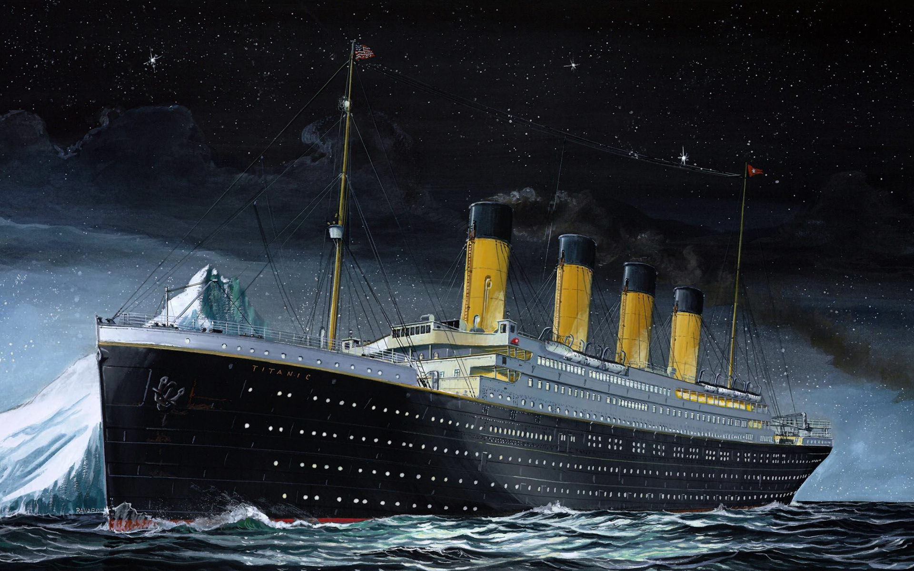

«Тита́ник» (англ. Titanic) — британский трансатлантический пароход, второй лайнер класса «Олимпик».
Строился в Белфасте на верфи «Harland & Wolff» с 1909 по 1912 год по заказу судоходной компании «White Star Line».
На момент ввода в эксплуатацию являлся самым большим судном в мире. В ночь с 14 на 15 апреля 1912 года во время первого рейса потерпел крушение в северной Атлантике, столкнувшись с айсбергом.
«Титаник» был оборудован двумя четырёхцилиндровыми паровыми машинами и паровой турбиной.
Вся силовая установка обладала мощностью 55 000 л. с.
Лайнер мог развивать скорость до 23 узлов (42 км/ч).
Его водоизмещение, превышавшее пароход-близнец «Олимпик» на 243 т, составляло 52 310 т.
Корпус судна был изготовлен из стали.
Трюм и нижние палубы разделялись на 16 отсеков переборками с герметичными дверями.
При повреждении днища попаданию воды в отсеки препятствовало двойное дно.
Журнал «Shipbuilder» назвал «Титаник» практически непотопляемым, это высказывание получило широкое распространение в прессе и среди общественности.
В соответствии с устаревшими правилами «Титаник» был оснащён 20 спасательными шлюпками, суммарной вместимостью 1178 человек, что составляло лишь треть от максимальной загрузки парохода.